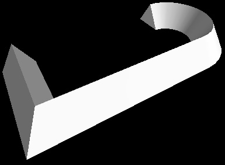

If you're new to Python
and VPython: Introduction
A VPython tutorial
Pictures of 3D objects
What's new in VPython 6
VPython web site
VPython license
Python web site
Math module (sqrt etc.)
Numpy module (arrays)
The paths library |
The paths library is an auxiliary library to be used together with the 3D extrusion object. It helps in creating paths along which to extrude a 2D shape. In the picture above, the extrusion path (pos) is in the shape of a star, and the cross sectional shape is a triangle.
Orientation and direction of a path
In using the paths library, it is helpful to think of the path as being created in the xy plane, like the star-shaped path above. The path is then tipped back onto the xz plane, with the top of the path pointing in the -z direction. With the path going around in the xz plane, think of the shape (a triangle in the figure above) as starting on the right, in the xy plane, and being extruded along the path.
When you create a path you have the opportunity to specify a different orientation of the path by specifying up, which by default is (0,1,0). For example, if you specify up = (0,0,1), the plane of the path will be tipped up into the xy plane, like the figure above.
The paths library is similar to the shapes library, but with some differences owing to the different characteristics of the pos and shape attributes of the extrusion object. You can assign a Polygon object or a shape from the shapes library to pos, but only if this represents a single unbroken contour.
The paths in the paths library all go counterclockwise in the xz plane, as seen from above. That is, if starting from a position on the x axis, they head in the -z direction and bend toward the left. If your shape has something sticking out on the right, it will be on the outer side of the extrusion, whereas something sticking out on the left will be on the inner side of the extrusion. However, if you use constructive geometry to combine shapes to produce a contour to use as a path, be aware that there is no guarantee that the Polygon machinery will generate a path that goes counterclockwise. If that is the case, note that setting xscale = -1 will reverse left and right in a shape. If your shape is left/right symmetric, the path direction doesn't matter.
Combining paths: You can combine paths that are provided here. Consider the following program which produces the object shown at the right. In the xz plane, start at the upper left, with L going from (-1,0,-0.5) toward the front, at (-1,0,-.5). Create a semicircular path at the right with A = paths.arc, and A.pos is the list of generated points. Add L and A.pos to get a list of points in which the last point in L connects to the first point in A.pos, which generates the second straight portion of the path. (In Python, adding lists creates a new list containing all of the elements of the original lists.) |
 |
L = [(-1,0,-0.5), (-1,0,0.5)]
A = paths.arc(pos=(1,0,0), radius=0.5,
angle1=-0.5*pi, angle2=0.5*pi)
p = L + A.pos
extrusion(pos=p, shape=shapes.triangle(length=0.4))
Choose one of the paths that are available in this library:
Be sure to read about rectangle, which explains features common to all of these objects (rotate, scale, xscale, yscale, roundness, thickness, and invert).
rectangle
circle
ellipse
line
arc
triangle
pentagon
hexagon
ngon
star
trapezoid
cross
pointlist
List of parameters
rt = paths.rectangle(pos=(-2,3), width=5, height=3)
creates a rectangular path with its center at pos=(-2,3), with width=5 (default is 5) and height=3. If the height value is omitted the shape is a square with its sides equal to the given width. Nothing is displayed as this is not a VPython object but a path object. If you print rt.pos you will see this:
[vector(-2.5, 0, 1.5), vector(-2.5, 0, -1.5),
vector(2.5, 0, -1.5), vector(2.5, 0, 1.5),
vector(-2.5, 0, 1.5)]
The output can be visualized in VPython by executing the following statement, which will display a rectangle in the xz plane (shown from above in the figure):
curve(pos=rt.pos) |
 |
You can also easily make an extrusion:
extrusion(pos=rt.pos, shape=triangle(length=1))
A rotated rectangular path can be obtained like this:
rt = paths.rectangle(width=5, height=3, rotate=pi/6)
This produces a rectangle rotated counterclockwise pi/6 radians (30 degrees) around the specified or default pos. A negative angle rotates the figure clockwise. |
 |
A rounded rectangle (a rectangle whose corners are rounded) can be obtained by using the roundness parameter:
rt = paths.rectangle(width=5, height=3, roundness=0.1)
creates a rectangle with its corners replaced by a circular arc of radius 0.3. The radius of this arc is calculated by multiplying the roundness parameter by the shortest side of the rectangle, the height in this case. A roundness of 0.1 is often a good choice. |
 |
An inverted rounding, or a circular chamfer can be obtained by setting the invert parameter as True, together with the roundness parameter.
rt = paths.rectangle(width=5, |
 |
The rectangle or its sides can be scaled by using the scale paramaters:
rt = paths.rectangle(width=5, height=3, scale=2)
effectively creates a rectangle of size 10 x 6. Width and height of a rectangle can be scaled independently by using xscale, yscale parameters:
rt = paths.rectangle(width=5, height=3, xscale=3, yscale=2)
creates a rectangle of size 15 x 6.
cr = paths.circle(radius=2, np=64) |
 |
creates a circular path at pos=(0,0), with radius=2 (default 3). There are 64 points used to approximate the circular contour; the default value for the number of points (np) is 32. The circle contour cannot be rotated or rounded, which would have no effect.
A circle can be scaled to obtain a different size circle or an elipse.
el = paths.ellipse(width=5, height=3) |
 |
creates an elliptical path at pos=(0,0), with width=5 (default 6) and height=3. If height is omitted it is set to be equal to width which causes the output to be a circle. The ellipse can be rotated and scaled but not rounded.
L = paths.line(start=(1,0,0), end=(3,2,0), np=21)
creates a straight line going from (1,0,0) to (3,2,0), divided into 20 equal lengths (21 points), so that you can color each section differently, or apply interesting twist or scale values. Unlike the other paths, the only attributes for paths.line() are start (default=(0,0,0)), end (default=(0,0,-1), and np (default=2, where 2 points define a single segment). Given the default values, setting pos=paths.line() is a simple way to make an extrusion of 1 unit into the screen (in the -z direction).
ar = paths.arc(radius=2, angle1=0, angle2=pi/2) |
 |
creates a quarter-circle arc centered at pos=(0,0), with radius=2. The arc can be rotated and scaled, but not rounded.
tr = paths.triangle(length=5) |
 |
creates a triangle path at pos=(0,0), with all sides equal to 5 (the default). The triangle can be rotated and rounded as well as scaled.
pt = paths.pentagon(length=5) |
 |
creates a pentagonal path at pos=(0,0), with all sides equal to 5 (the default). The pentagon can be rotated and rounded as well as scaled.
hx = paths.hexagon(length=5) |
 |
creates a hexagonal path at pos=(0,0), with all sides equal to 5 (the default). The hexagon can be rotated and rounded as well as scaled.
poly = paths.ngon(np=7, length=5) |
 |
creates a heptagonal path at pos=(0,0), with all seven sides equal to 5 (the default). The heptagon can be rotated and rounded as well as scaled. One can also create an ngon object to fit into a circle with a given radius. In this case the length is calculated automatically:
poly = paths.ngon(np=7, radius=4)
st = paths.star(n=5) |
 |
creates a star object at pos=(0,0), with 5 beams (the default), fitting into a circle of radius=3 (the default). As you change the radius value, the beam length changes accordingly, with concave vertices remaining on their original positions.
st = paths.star(n=6, radius=3, iradius=1)
creates a 6-pointed star with outer radius=3, where the tips of the beams are located, and inner radius=1, where the concave vertices reside. The star can be rotated and rounded as well as scaled.
tr=paths.trapezoid(pos=(-2,3), |
 |
creates an isosceles trapezoid object with its center at pos=(-2,3) with respect to the extrusion curve points, with width=6 (the default width of the base), height=1 (the default is 3), and top=3. If top is omitted, it is set to be equal to half of the width. The trapezoid can be rotated and rounded as well as scaled.
st = paths.cross(width=10, thickness=2) |
 |
creates a object in the shape of a cross, with arms that are 10 across by 2 wide. The very different use of "cross" in the cross product of vectors is not a problem as long as you refer to paths.cross as different from cross.
Here is a cross-shaped path extruding an elliptical shape: |
 |
pl = paths.pointlist(points=[(1,0),(1,1),(-2,3),(1,0)],
rotate=pi/4)
creates a polygon of the shape defined by the list of (x,y) points provided. The list of points can be prepared manually or by programs using any algorithm. The polygon can be rotated and rounded as well as scaled.
This list defines the parameters used in defining the 2D paths.
pos Position: the 2D center of the path; default = (0,0). For the pointlist object, a list of (x,y) positions.
radius The radius of the circle, default = 3. It is used as the radius of the circle path, as well as the default radius value for the star path's outer radius, and for the ngon path, if the length parameter is not provided.
length Length of 2D path like pentagon, hexagon, ngon, default = 5
width Width of 2D paths like rectangle, ellipse, default = 5
height Height of 2D paths like rectangle, ellipse, default = None (Equal to width)
rotate Rotation angle in radians about the center of the 2D path, default = 0.0. A positive value gives a counterclockwise rotation; a negative value rotates clockwise.
np Number of sides of a polygon to approximate objects like circle and ellipse (default = 32); for ngon, np is the number of sides (default = 3). Also the number of points on a star (default = 5).
n The number of outward-going beams on a star (default = 5).
iradius Inner radius for the star object, default = 0.5*radius.
roundness Radius of curvature for the sharp corners of 2D paths to be rounded. It is used to obtain 2D paths like rectangle, triangle, star with rounded corners, default = 0.0. When specifed as larger than zero, the radius is calculated by multiplying the roundness by the shortest length. For example, if roundness=0.2, this means the radius will be 20% of the smallest length of a polygon. Suggested value = 0.1.
invert When used together with the roundness parameter, a circular chamfer is created as opposed to a rounded corner, default = False.
scale Scaling multiplier to resize the shape objectin both x and y directions, default = 1.0
xscale Scaling multiplier in x direction only, default = 1.0
yscale Scaling multiplier in y direction only, default = 1.0